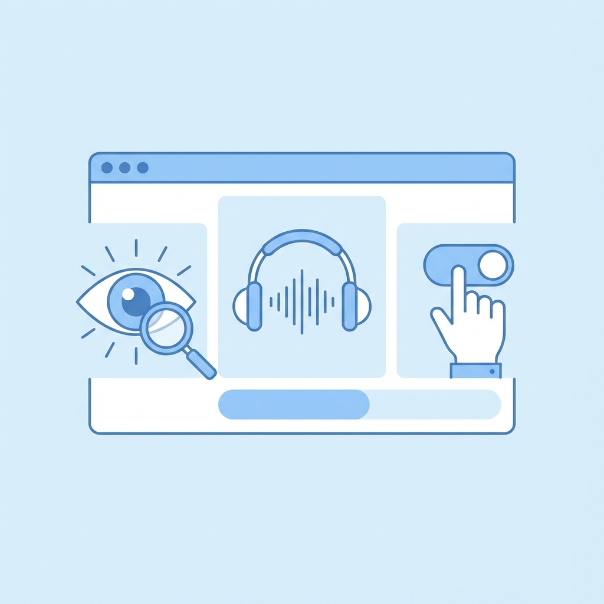
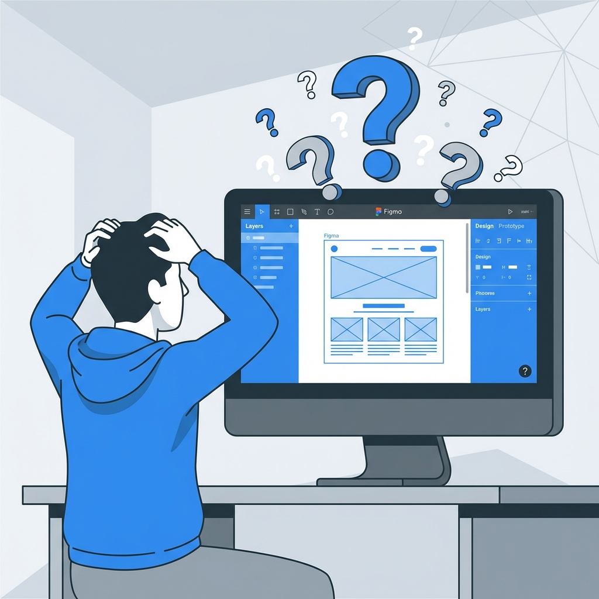
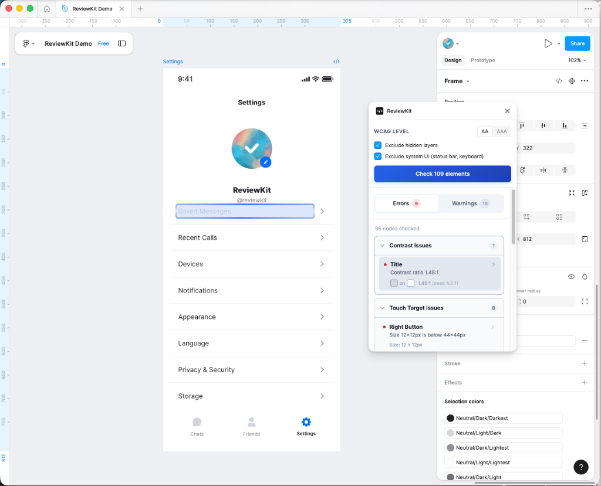
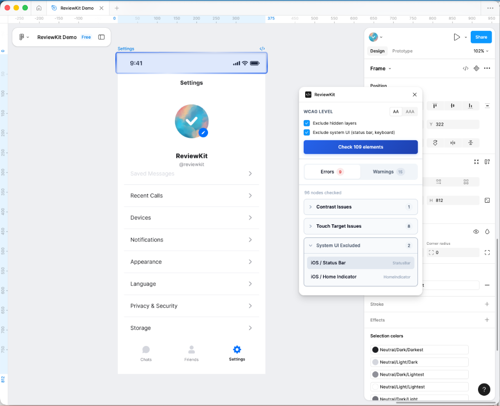
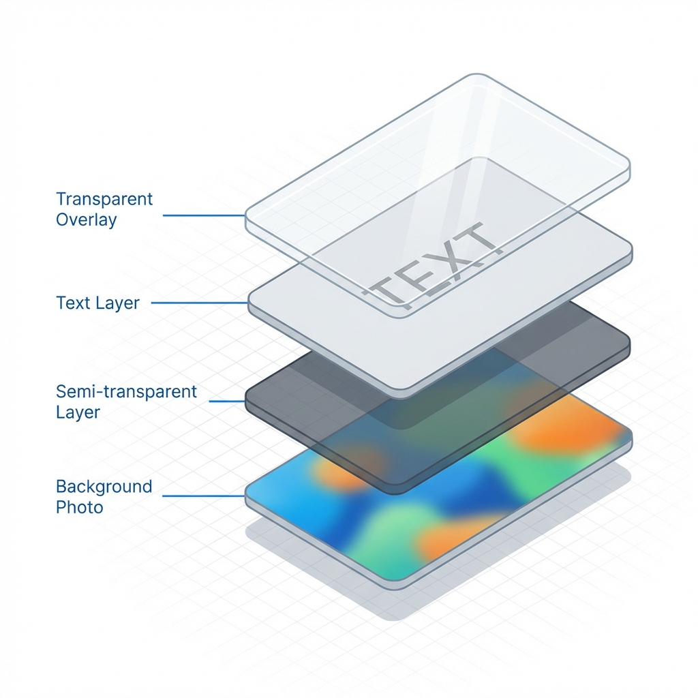

Digital accessibility is more than just a buzzword; it is a fundamental aspect of modern web design. At its core, accessibility ensures that websites, applications, and digital tools are usable by everyone, regardless of their physical or cognitive abilities. This includes individuals with visual impairments, motor difficulties, hearing loss, and other disabilities. Guidelines such as the Web Content Accessibility Guidelines (WCAG) provide a comprehensive framework for creating accessible digital experiences. These guidelines are organized into four principles: Perceivable, Operable, Understandable, and Robust (POUR). By adhering to these standards, designers and developers can create products that are not only compliant with legal regulations but, more importantly, inclusive and usable for all.

Why do we need accessibility? The answer lies in the diversity of the human experience. A significant portion of the global population lives with some form of disability. Ignoring accessibility effectively alienates a vast user base. Furthermore, good design is inherently accessible. Features like high color contrast, clear typography, and intuitive navigation benefit everyone, not just those with specific needs. When a design is accessible, it is clearer, cleaner, and easier to use for every single user.
The Challenge of Manual Verification
While the principles of accessibility are well-understood, applying them consistently in a design workflow is often easier said than done. In a complex tool like Figma, keeping track of every accessibility rule while managing hundreds of layers, components, and interactions can be daunting. Designers are often tasked with juggling multiple priorities - aesthetics, functionality, brand consistency - leaving little mental bandwidth for rigourous accessibility auditing.

Manually checking these elements is an incredibly labor-intensive process. Consider color contrast alone: checking the contrast ratio between text and its background requires sampling the colors, inputting them into a calculator, and verifying against compliance levels (AA or AAA). Now multiply that by every text element, button, and input field in a design file. The possibility for human error is high, and the time consumption is significant. This friction often leads to accessibility checks being pushed to the end of the process, or worse, skipped entirely.
Introducing ReviewKit: One-Click Accessibility
This is exactly why we built ReviewKit. We wanted to bridge the gap between complex accessibility guidelines and the fast-paced reality of design workflows. ReviewKit is a Figma plugin designed to make accessibility checks instantaneous and effortless. Instead of manually inspecting elements one by one, ReviewKit allows you to simply select a frame and click a single button.

Once activated, the plugin automatically scans your selection and identifies potential accessibility issues. It highlights problems related to contrast ratios, text sizes, touch targets, and more, providing immediate feedback directly within your design environment. This seamless integration empowers designers to address issues in real-time, making accessibility a natural part of the creative process rather than a final hurdle.
Under the Hood: How It Works
Building a tool that feels simple often requires complex engineering. We wanted ReviewKit to feel like magic, but under the surface, it relies on three core technologies to understand your design like a human would.
1. Smart Scanning (Recursive Tree Traversal)
A Figma file is essentially a giant tree of nested layers. When you select a frame, ReviewKit scans every single branch and leaf of that tree - thousands of layers in milliseconds. But it’s not just a brute-force scan. The plugin is smart enough to ignore hidden layers, skip over system UI elements (like status bars or home indicators), and focus only on the content that matters. This ensures that you aren't flagged for issues in parts of the design that aren't actually visible to the user.

2. Human Vision Simulation (Composite Color Calculation)
Checking contrast isn't as simple as comparing two hex codes. Modern designs use transparency, gradients, and background blurs. To solve this, ReviewKit simulates how human vision works. It takes a text layer, "looks" through all the semi-transparent layers behind it, and calculates the actual color value that reaches your eye. This "composite" calculation means our contrast checks are accurate even on complex, multi-layered backgrounds where other tools might fail.

3. Designer Intuition (Context Awareness)
ReviewKit acts like an experienced pair designer sitting next to you. It doesn't just look at raw data; it understands context. For example, if a layer is named "btn-primary" or has a "Click" interaction attached, ReviewKit intelligently recognizes it as a button. This means it automatically checks for things like touch target size—ensuring it's big enough to tap—without you needing to manually tag or configure anything.
We are constantly refining ReviewKit to handle these complexities, ensuring that building accessible designs is as intuitive as the design process itself.
Start Building for Everyone
Accessibility shouldn't be an afterthought or a chore. It is an opportunity to make your product better for every single user. With ReviewKit, you can integrate these checks directly into your workflow, catching issues early and learning as you design.
Best of all, all these powerful features are available to use for free right now in our Figma plugin. You can start ensuring your designs are compliant and inclusive today.
We are building this for you, and your feedback shapes our roadmap. If you have any questions, feature requests, or just want to share your experience, please reach out to us at support@reviewkit.ai.